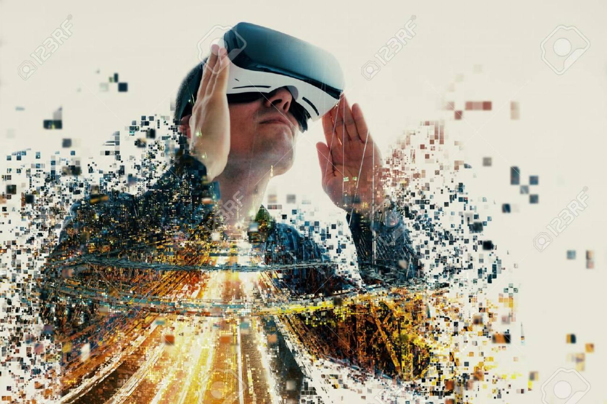

SIXR is a social enterprise committed to providing immersive reality content to the global community beyond their imagination!
Our Cinematic VR (Virtual Reality) team is rooted in Seattle, Washington and attracts talent within the Pacific Northwest. A Virtual Reality Renaissance is sparking creative growth for an unexplored frontier, building anticipation.
SIXR supports community building by promoting new methods of storytelling in VR/AR/360/MR. We are diverse pioneers that provide early access to technological resources for people of varying cultural, educational, and socioeconomic backgrounds. We strive to be inclusive as these bright minds come together and we help bring powerful high-quality products to the eXperimental realities landscape!